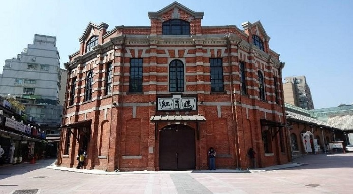

網美打卡之旅

龍山寺站
龍山寺最早發現是在清朝，是當時居民的信仰中心，建築結合清代、日據與光復後綜合表現的寺廟藝術，悠久的歷史訴說著昔日『一府二鹿三艋舺』的風華，而在現今，龍山寺月老是網路票選最靈驗的愛情寺廟第一名，由此可知不管過去未來，龍山寺都有他獨特的魅力。
剝皮寮聚落成形於清代早期．橫跨清代、日治、民國三個時代，混合了不同時期的建築風格與人文風貌，成為一條足以代表艋舺特色的市街。來到這裡不僅可以欣賞古蹟，拍到懷舊好看的照片，也可以去欣賞一些展覽跟表演。
新富町文化市場擁有超過80年的市場記憶，屬於日治時期較後期完成的公有市場，獨特的Ｕ型中央天井引進了自然光線，讓建築內部即便不開燈也明亮。

西門站
西門紅樓在日治時期被稱為八角堂，後來改名為紅樓劇場，又因為改映電影，被稱為紅樓戲院，現在是著名的文創藝文場所和展演空間。
西本願寺是日治時間本願寺派的佛寺，後來二二八事件後辜振甫等政治犯也曾被囚禁於此。

台北車站
郵政博物館，在裡面郵政的歷史一一展現在我們的眼前，呈現出郵政發展的軌跡。
撫臺街洋樓，是僅存的日治初期獨棟式的洋行，彌足珍貴，現在裡面也有展覽在介紹它的歷史故事。
台北北門，被車流包圍的一級古蹟，曾經被忠孝橋遮擋了他的風華，後來受到重視才能再次展現出它的壯觀和美麗。